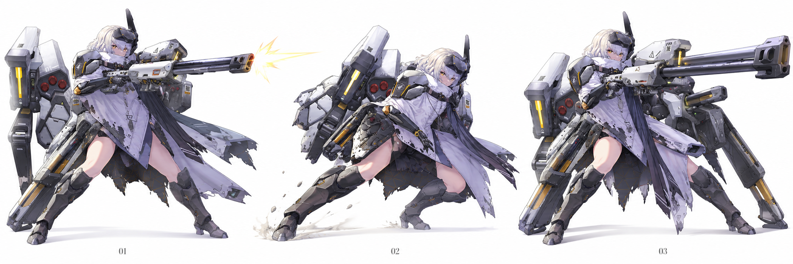
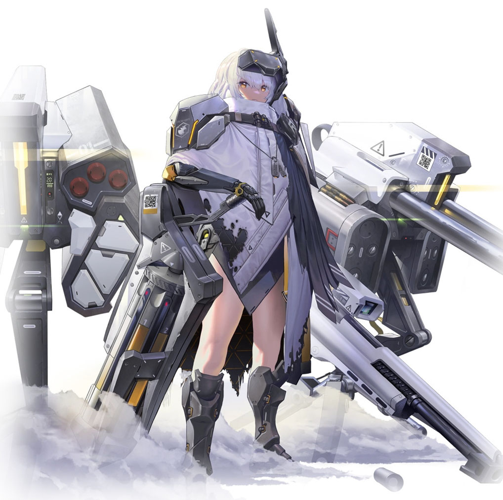
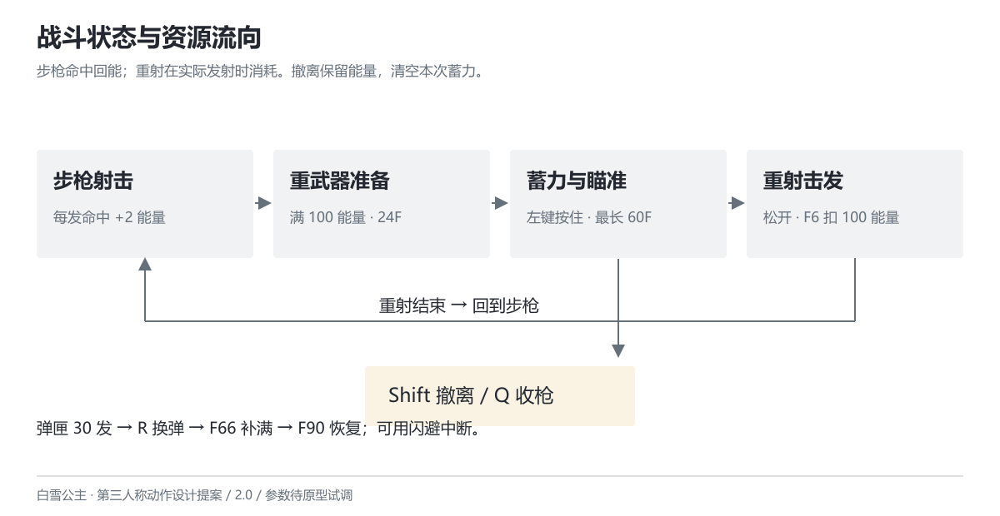
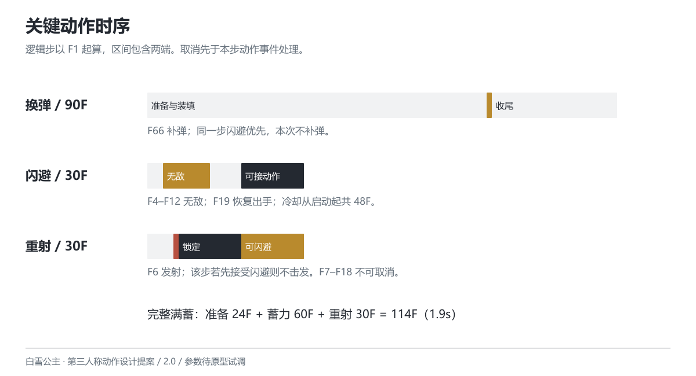
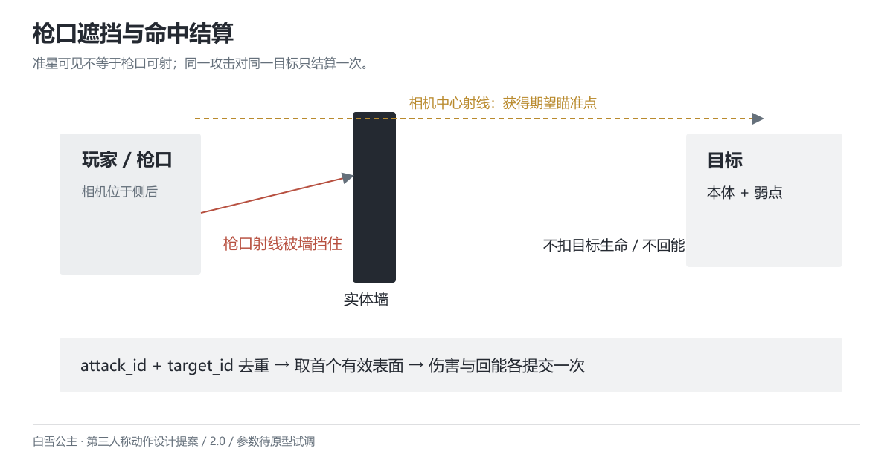
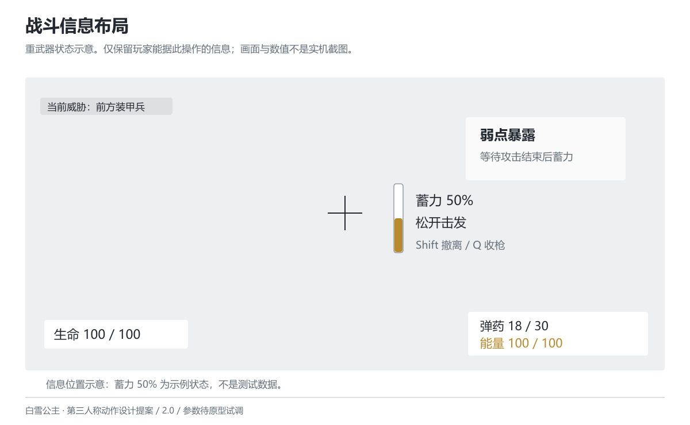
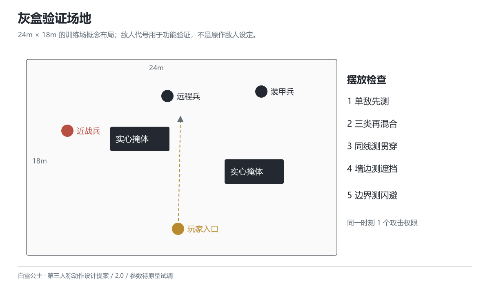

白雪公主
第三人称动作设计提案
V2.0 · 2026-10-26 · 所有参数待原型试调

Wiki 原画参考再创作；不是模型或实机截图。

Wiki 默认立绘参考。原画权利归原权利方；新动作与武器布置为改编。
角色定位与改编
版本 2.0 · 2026-10-26 · 设计提案
这份作品把《胜利女神：NIKKE》的白雪公主改编为可自由移动的第三人称射击角色。玩家以步枪命中积累能量，观察敌人预警与站位，在安全间隙切入重武器蓄力，选择提前击发或继续蓄满。重点是开火位置、蓄力时机和撤离时机。
作品范围与完成状态
当前交付为角色动作设计提案、原型初始参数、关键姿势概念图与验证用例。未制作角色模型、动画资产或引擎原型，也没有实机手感、性能或玩家测试结论。所有新参数均为本次改编的待试调初值；原画不代表已经完成 3D 制作。
目标为 PC 键鼠、单人、第三人称肩后视角。先做单角色、三类测试敌人与一个灰盒训练场。联机、队友、养成、移动端适配和完整 Boss 不在本轮范围。60 Hz 是本提案的逻辑时间基准，不是性能测试结果。
原作保留与重新设计
| 依据 | 保留的识别点 | 本次改编 |
|---|
| 官网角色介绍 | 朝圣者、先行者，持续在地表与莱彻作战 | 克制的表情、先确认威胁再部署重武器的动作表现 |
| Wiki 技能条目 | 常规步枪与爆裂后的蓄力、贯穿重火力 | 改为手动控制的两种战斗状态；蓄力与取消由玩家决定 |
| Wiki 默认立绘 | 白灰披风、黑色机械结构、黄色灯条、大型武器 | 保留轮廓与配色；武器收拢和架设方式为概念改编 |
原作包含队伍爆裂体系；本提案的命中回能、100 点能量门槛、自由移动和闪避均为新增规则。这里的“重武器状态”不是原作已存在的可自由切换玩法，也不声称新增的武器部署结构属于官方设定。Wiki 中的具体伤害、弹匣和冷却不直接作为本提案平衡参数。
玩家需要作出的选择
步枪适合边移动边处理持续威胁，但需要换弹。重武器能贯穿一条射线上的多个目标，蓄满收益较高，但移动慢且会被受击打断。闪避能中断准备动作并保留尚未消耗的能量，却会丢失本次蓄力进度。玩家可以提前击发解决眼前目标，也可以等敌人结束攻击后争取满蓄。
不把“守护”与“歼灭”分别写成可叠加的人格数值。角色气质通过观察、据枪、卸力和收枪表现；战斗资源只承担能看懂、能操作的规则。
本轮取舍
移除五段强制射击连招、过热激光、地面灼烧、双人格 Buff、自动炮台、独立电影式大招与治疗奖励。它们会同时引入弹药、过热、层数、AI 和演出时序，难以看清双状态的作用。步枪持续射击、枪托近击和一次蓄力重射保留各自职责。跳跃、倒地追击及复杂空中动作暂缓。

战斗状态与资源流向。
操作与资源
版本 2.0 · 2026-10-26 · 设计提案
键鼠操作
| 输入 | 步枪状态 | 重武器状态 |
|---|
| WASD / 鼠标 | 移动 / 调整视角 | 低速移动 / 调整视角 |
| 左键 | 点按一发；按住连续射击 | 按下开始蓄力；松开提交击发 |
| 右键 | 按住肩后精瞄，松开退出 | 不额外缩放，保留肩后视角 |
| Q | 能量满时进入重武器准备 | 未提交击发时退出并清空蓄力 |
| Shift + 方向 | 闪避；无方向时沿当前后方 | 同左，并退出重武器状态 |
| R | 弹匣未满时换弹 | 不记录，界面提示“退出重武器后换弹” |
| F | 枪托近击 | 不记录，避免与蓄力操作混用 |
右键是持续状态，不占输入队列。连续射击读取当前左键按住状态，不缓存多次射击。进入重武器时若左键已经按住，需要先松开再按下，避免把持续射击的松键误判为重射。
弹药与能量
步枪弹匣容量暂定 30 发，备弹不限；每次实际击发消耗 1 发，未击发的取消动作不消耗。弹匣为零时，步枪状态下新按左键或持续按住左键均申请换弹；退出受击或闪避后重新检查当前按键，死亡和暂停时不执行。满弹按 R 无动作。
步枪每个攻击实例首次造成正伤害时获得 2 点能量，最高 100。未命中、完全被场景遮挡或无敌目标不回能；同一发命中多个部位仍只回能一次。近击与重射不回能；击杀不额外回能，脱战不自动增长或衰减。
进入重武器要求能量达到 100，但准备与蓄力期间不扣除。发射事件发生时，能量扣除 100 与生成射线在同一步完成。取消、受击、死亡发生在发射事件之前时不扣除；发射之后即使未命中也不返还。满蓄不是免费追加一发，也不回复生命或弹药。
生命与受击
训练场角色生命暂定 100。生命归零立即进入死亡，清空输入与尚未执行的攻击事件。普通受击硬直初值 18F，结束前不接受攻击，末 6F 可记录一次闪避。受击后保护 30F，从受击发生的逻辑步开始计时；保护期间不再次扣血或刷新保护，避免重复碰撞延长无敌。它是防止连续命中失控的试调项，不能替代敌人预警。
换弹与闪避的代价
换弹总长 90F，F66 补满弹匣。任何时刻可以用合法闪避中断；若闪避与 F66 补弹同一步满足条件，先处理闪避，本次不补弹。F66 已完成之后再闪避则保留已补弹药。重新换弹从 F1 开始，不继承进度。
闪避总长 30F，F4–F12 为无敌段，F19 起可以射击、近击或换弹。48F 冷却从闪避开始计时，取消后摇不重置冷却。闪避距离初值 3m；受场景碰撞限制，不穿墙、不越过阻挡。连续闪避不能覆盖全部冷却时间。
一轮操作示例
玩家射击近处轻型敌人，命中获得能量；远程敌人的瞄准线亮起时，侧移或闪避到掩体后。能量满后，等装甲敌人攻击结束、弱点暴露，再按 Q 准备重武器；长按左键蓄力。若近战敌人靠近，可松开提前击发，也可闪避撤离并保留能量。重射发生后回到步枪状态，重新处理弹匣与站位。

补弹、无敌与重射事件的时间口径。
动作时序与衔接
版本 2.0 · 2026-10-26 · 设计提案
时间口径
本提案使用 60 Hz 逻辑步，每步约 16.67ms。动作编号从 F1 开始，区间包含两端；如 F4–F12 共 9F。进入状态后的第一步记作 F1。可变渲染帧率不改变逻辑时序，暂停不推进动作计时。动画可以重定时，伤害事件不得因为播放速度或过渡重复执行。
动作表描述最小可测规则。每个动作给出总长、事件与可中断起点；不再用含义不清的“Early 20F / Late 14F”表示取消窗口。可进入某动作还必须满足其资源、冷却和输入条件。
步枪射击
A_FIRE 总长 12F，F3 发射一发命中扫描射线，伤害初值 10。左右武器可以交替播放枪口表现，但一次发射事件只对应一发弹药和一个攻击实例。F4 起允许闪避；F12 结束后若左键仍按住且有弹药，进入下一次射击。左键松开不撤销已开始的一发。
精瞄过渡 12F，移动速度初值从 5m/s 降到 3.5m/s。精瞄不改变伤害或射速；原型首轮不加入随机散布，先验证准星、遮挡与命中一致性，之后再讨论后坐和扩散。不要用临时的散布优势掩盖射线错误。
重武器准备、蓄力和击发
A_ENTER 总长 24F，未完成前不受理重射输入，可用闪避中断。F24 完成后进入 A_CHARGE 等待态。左键按下开始从 0 累加蓄力逻辑步，每完成一步增加 1，最高 60；未按左键时保持零蓄力等待，不自动开火。按 Q 退出为 A_EXIT（18F），回到步枪。
左键松开时锁定当前蓄力值，进入 A_HEAVY_FIRE。伤害 = 80 + 160 × min(蓄力步数,60)/60；未积满一步即松开也按 80 计算。松开后不再增长。击发动作总长 30F，F6 发射，F19 起允许闪避，结束后自动回到步枪；不提供重射连发。
重武器准备和蓄力都没有无敌或霸体。准备、等待、蓄力时移动速度初值为 1.5m/s；重射 F1–F18 原地支撑，F19 起恢复步枪移动。击发前可闪避取消而保留能量；发射之后取消只缩短后摇，不追回已经提交的伤害。原型不采用三次镜头切换、自动弱点锁定或长时间全局停帧。
枪托近击
A_MELEE 总长 36F，F13–F15 扫掠近击体，F20 起可闪避。初值伤害 5、作用距离 1.8m、水平前向夹角 ±45°。以角色胸前为起点扫掠，场景阻挡优先；同一动作每个目标只命中一次。轻型敌人受击硬直 24F、后推 1.5m，碰墙停止。装甲敌人未露弱点时不被打断；Boss 不在本轮范围，不能默认所有敌人都会被击退。
近击承担近身打断，伤害低且不回能。它不替代闪避，不附带射击派生，也不需要先完成三段普攻。若原型发现始终没有使用价值，应先检查敌人近身预警和击退效果，再决定是否保留，不能预先宣称“使用率偏低”。
中断与状态迁移
| 当前动作 | 可接受的新动作与起点 | 自然结束 |
|---|
| 步枪待机/移动 | 射击、近击、换弹、Q、闪避；各自检查条件 | 保持步枪 |
| A_FIRE | F4起闪避或Q；F12结束后近击/换弹/下一发 | 回到步枪或继续射击 |
| A_RELOAD | F1起闪避，其他动作不打断 | F90后回到步枪 |
| A_MELEE | F20起闪避 | F36后回到步枪 |
| A_ENTER | F1起闪避 | F24后进入重武器等待 |
| A_CHARGE | 任意步闪避、Q退出，或松键提交重射 | 无自然结束 |
| A_HEAVY_FIRE | F1–F6或F19–F30可闪避；F6同一步先裁决取消；F7–F18锁定 | F30后回到步枪 |
| A_EXIT | F1起闪避 | F18后回到步枪 |
| A_DODGE | F19起射击、近击、换弹；不提前接Q | F30后回到步枪 |
| A_HIT | 末6F只记录闪避，F18结束后才执行 | 回到步枪 |
| A_DEAD | 不接受战斗输入 | 仅允许重开 |
未列出的迁移不执行；处于无敌或受击保护时先检查能否受伤。死亡可从任意非死亡状态进入。按住射击不会突破换弹、受击或其他锁定段；回到步枪后再读当前按住状态。
输入缓冲与同一步裁决
离散输入只保存一个待执行意图，保留 6 个逻辑步（约 100ms）。当前步计为第 1 步，超过第 6 步失效；可执行起点恰好落在第 6 步时执行，第 7 步不执行。新输入覆盖旧意图，同一步多输入按闪避 > Q 切换 > 近击 > 换弹裁决。左键按住和右键按住只读当前状态；重射松键只在 A_CHARGE 中受理，不进入缓冲。
每步顺序：读取输入 → 暂停/死亡与外部受击裁决 → 资源与冷却检查 → 合法中断 → 到期动作事件 → 移动及镜头表现。外部受击与本角色击发事件同一步到来时，受击优先，未发出的攻击撤销。已在前一步发出的攻击不因后续受击消失。
死亡、离开战斗和暂停均清空待执行意图。恢复暂停时重新读取按住状态，重武器左键必须先释放再重新按下。闪避中无敌段拒绝受击事件，保护结束后命中才产生伤害；资源不足、冷却未到或满弹换弹的请求直接拒绝，不保存为待执行意图。输入缓冲只容忍动作衔接的时间差，不自动等待资源或冷却。

枪口遮挡与按目标去重。
命中与状态处理
版本 2.0 · 2026-10-26 · 设计提案
射线与遮挡
步枪与重射均以相机中心射线获得期望瞄准点，再从实际枪口向该点查询阻挡。准星指向敌人、枪口却被墙挡住时，只命中墙，在准星旁显示遮挡符号。相机位于墙后也不能绕过枪口遮挡。步枪有效射程初值 30m，重射 60m；射程之外不造成伤害。
重射沿同一射线依次处理最近的有效目标，最多贯穿 3 个不同目标；场景实体墙阻断后续穿透。首轮不穿透场景，不做跳弹、自动索敌和远处范围爆炸。重射的细束与命中火花用来指出实际路径，不用覆盖屏幕的爆炸掩盖落点。
部位与重复结算
角色先使用一个移动碰撞胶囊与一个伤害接收体。敌人先区分本体与一个可选弱点，不预设 43 个判定体。移动碰撞负责场景阻挡，伤害接收体负责战斗命中，两者不混用。
每次攻击生成唯一 attack_id；去重键为 attack_id + target_id。同一攻击命中目标多个部位，取距离最近的有效表面；重合距离时弱点优先，一次只结算一份伤害。重射贯穿同一敌人的多个部位仍算一个目标，并且只占一个穿透名额；不能穿过身体后再次取弱点加一份伤害。
普通敌人弱点倍率初值 1.5。装甲目标的封闭本体倍率 0.5，暴露弱点倍率 1.5，两者按实际命中区域选一，不相乘。最终伤害 = 攻击基础伤害 × 目标命中区域倍率；训练场生命可保留小数，界面仅显示四舍五入数值。无敌、完全阻挡或目标已死亡时不结算伤害和回能。
状态职责
步枪待机/移动、射击、换弹、近击、重武器准备、蓄力、重射、退出、闪避、受击和死亡为主要状态。精瞄与移动方向作为状态参数，不把每个方向、每个镜头都扩成一个状态节点。换弹只在步枪状态请求；重射结束、退出或闪避后进入步枪。
进入状态时初始化计时和攻击实例；离开状态时撤销未发生事件、关闭近击体并移除临时特效。一次性事件使用实例内已执行标记，不能仅依赖动画回调。动画回调可通知音效和特效，但弹药消耗、补弹、伤害与能量必须由逻辑事件提交。动画跳播、过渡重入不得补发被取消的攻击。
异常处理
目标在击发前死亡：仍按枪口射线处理当前场景，不自动改瞄另一个敌人。目标死亡后本次射线可继续查找后方目标，但死人不占穿透名额。枪口挂点缺失：阻止战斗初始化并显示缺失项，不在角色脚下生成攻击。相机被挤近时仍从真实枪口查阻挡；若枪口落在实体墙内则本次仅显示阻挡反馈。
暂停冻结蓄力、冷却、保护时间与敌人预警；恢复后不补偿过去时间。切出窗口按暂停处理。重开训练场重置生命、弹药、能量、冷却、状态、攻击实例与敌人，不保留上次蓄力。

战斗 UI 信息布局示意。
关键姿势概念图：步枪、侧向撤离、重射支撑。
镜头、界面与动作表现
版本 2.0 · 2026-10-26 · 设计提案
肩后镜头
常态、精瞄、重武器均保持第三人称肩后方向。常态垂直 FOV 初值 65°，精瞄 50°，重武器 45°；屏幕宽高比改变时保持垂直口径。FOV 过渡初值 12F，保留当前朝向，不自动转向目标。它们是试调值，不用 FOV 直接标为“4 倍镜”或“40 倍镜”。
相机先做场景碰撞回缩，再稳定构图。肩位可切换但不移动枪口或绕开掩体；近战和重射不强制切正脸。屏外攻击使用方向符号和独立预警音，不能只靠后方受击后再提示。相机震动可关闭，关闭后蓄力、命中和危险提示仍可辨识。
战斗界面
左下仅显示生命，右下显示弹药与能量，中心显示准星及枪口遮挡。重武器状态在准星右侧显示蓄力比例与“松开击发”，下方显示“Shift 撤离 / Q 收枪”。未满能量按 Q 提示“重武器需要 100 能量”，不播放完整切换动作。
保留白灰、深灰和少量暖黄。能量满用刻度闭合与文字提示，蓄力满用边框闭合和一次短促音效；危险用橙红符号并配方向，避免仅靠颜色传达。移除风速、无弹道作用的测距、人格层数和重复的枪械读数。UI 图仅展示信息位置，不声称是实机截图。
关键姿势与动画需求
步枪开火：角色看向目标，武器轴线清楚，左右模块不能遮住准星。移动时下肢保持方向变化，上身保持瞄准；不要先锁死逐关节角度再要求动画匹配。闪避：武器先收近身体，角色沿输入方向跨步，披风延后跟随，枪口不从身体或地面穿出。
重武器准备：先让武器进入可见支撑位，再完成据枪；蓄力时膝髋承重，击发后先卸力再回正。收枪应能与闪避共用中断姿势，避免大型部件突然消失。具体固定结构、挂点和装填动作需在模型与绑定可用后确认。附图是由 Wiki 原画参考再创作的关键姿势概念图，不是可直接制作的三视图或模型规格。
最小动画清单：持枪待机、前后左右移动与混合、步枪开火上身层、装填、枪托近击、闪避、重武器准备/蓄力循环/击发/收枪、受击与死亡。先检查剪影、支撑、瞄准方向及中断时的接续，再补机械细节。面部仅需观察、蓄力专注、受击与死亡的表情需求，不预设 52 个 Blend Shape 或永久锁定清单。
音效与特效
步枪枪口光、枪声与扣弹在同一发射事件触发；命中提示在伤害实际结算后出现。蓄力循环音在满蓄时切为稳定提示，取消时立刻退出；重射使用一次主要冲击音、短促后坐与路径亮束。先不用全局 Hit Stop，避免射击、敌人预警和输入时序被一起冻结。
近击以接触音、目标后退和短促命中火花表现打断；若未打断装甲，则给出硬质碰撞音和“不打断”符号。特效不能超过已定义的命中范围。取消、受击、暂停、死亡都要停止对应的循环音和持续特效。低闪烁选项关闭白闪与色差，保留轮廓和提示音。
制作与性能确认
本轮未指定引擎、模型和目标硬件，不发布骨骼数、Draw Call、显存或粒子“红线”。先在选定设备记录场景基线，再分别打开角色、开火、重射和特效，记录帧时间变化及瓶颈。数值预算应由该记录决定。原型先用灰盒武器、基础材质和必要提示，确认玩法后再投入最终资产。

训练场概念布局，非已制作关卡。
敌人与验证场景
版本 2.0 · 2026-10-26 · 设计提案
三类测试敌人
敌人以灰盒代号呈现，不将新设计包装成原作莱彻种类。E_RANGED 远程兵初始生命 80，瞄准预警 30F 后朝锁定位置开一发，伤害 10，随后休息 90F。预警结束时锁定落点，之后不继续追踪；地面标记保留到该次攻击结束。玩家可以侧移或利用掩体阻挡。
E_RUSH 近战兵初始生命 60，接近后播放 36F 前摇，F37–F42 向锁定方向冲刺攻击一次，初值伤害 15，后摇 48F。前摇结束时锁定方向，冲刺不追踪转弯，碰墙停止。玩家可侧闪、提前射杀或在接触前枪托打断。攻击实例对玩家只结算一次。
E_ARMOR 装甲兵初始生命 160，本体封闭时伤害倍率 0.5；蓄势 48F 后发射直线攻击，伤害 20，随后恢复 120F，恢复期暴露弱点（倍率 1.5）。玩家可以等弱点暴露再蓄力重射，也可以提前射击削血。未暴露时枪托不能打断。攻击结束事件开启弱点，恢复结束时关闭，不用不同动画版本的时间长度隐式决定。
敌人攻击权限在混合场景初值为 1：一个敌人进入攻击前摇至结束恢复前占用权限；被打断、死亡或目标丢失立即归还。未获权限者只能移动、观察，不造成伤害。屏外敌人先进入可感知位置再申请；这一保守初值先验证预警和操作，再根据记录试调，不能直接宣称“大群压迫感足够”。
灰盒场地与摆放
场地初值 24m × 18m，四周封闭，两块实心掩体分开放置，留出横向闪避与直线贯穿路线。角色从长边中央进入；远程兵放在正前方，近战兵从侧前方进入，装甲兵位于远端。下表以场地中心为原点、平面 X 向右、Z 向前，单位为米；示意图不按精确比例施工，也不是实际关卡制作结果。
| 对象 | 中心坐标（X，Z） | 初始设置 |
|---|
| 玩家 | （0，-6） | 朝向 +Z，生命100、弹药30、能量0 |
| 远程兵 | （-1，6） | 首轮单敌验证；后续混合时保留 |
| 近战兵 | （-9，2.5） | 朝玩家接近 |
| 装甲兵 | （6，6） | 正面朝向玩家入口 |
| 左侧掩体 | （-3.2，1.7） | 宽4.5m、深2.2m、高2.2m |
| 右侧掩体 | （5.6，-1.3） | 宽4.5m、深2.2m、高2.2m |
测试敌人互相站在一条射线上时验证贯穿，不把平时所有敌人都排列成直线。掩体旁安排单独的“相机可见但枪口被挡”位置；边界处检查闪避不会出界或穿墙。
测试顺序与要回答的问题
1. 静止靶：射击、弹匣、换弹、回能和取消事件是否一致？
2. 单个远程兵：能否看懂落点并用侧移或掩体规避？
3. 单个近战兵：枪托和闪避是否分别提供可观察的应对收益？
4. 单个装甲兵：玩家是否能识别封闭与露出弱点，完成一次满蓄？
5. 三类混合：是否仍能辨认当前攻击者，主动选择提前击发或撤离？
6. 阻挡与重复事件：墙边、弱点重叠、暂停恢复和目标死亡是否产生错误结算？
功能检查与手感观察
data/test_cases.csv 给出明确前置条件、操作和预期结果，初始状态均为“待执行”。文档校验只证明参数引用和时序关系没有发现矛盾，不证明这些用例已经在游戏中通过。
制作原型后，应为每次执行记录构建版本、输入序列、关键帧或日志、实际结果；体验观察另记能否识别预警、为何取消蓄力、为何选近击等行为。不要用没有分母的通过率、预设满意度、虚构平均使用率替代记录。先修复错误命中、失控和丢失输入，再讨论攻击节奏和平衡。
参数依据与配表方式
版本 2.0 · 2026-10-26 · 设计提案
初值如何使用
data/design.json 是规则参数的维护入口；动作表、CSV 与工作簿均由同一份数据导出。新增动作使用稳定 ID，不把中文名称当关联键。字段写明单位、允许范围和用途；缺少事件时用“不适用”，不把空白自动当作零。工作簿用于阅读与试调计算，修改后应回写数据源并重新生成，避免多份表互相覆盖。
动作配置、一般参数、敌人配置与功能用例分别服务不同工作。动作表一行对应一个动作，事件帧为整数；敌人表记录生命、预警、攻击与恢复；用例表一行对应一个检查情形，结果列须在实际执行后填写。说明性的设计取舍留在文档，不把长篇正文塞入配置单元格。
表结构参考 Epic 的 DataTable 示例：用唯一行名对应一组结构化字段，字段与程序约定一致。当前 CSV 没有绑定某个引擎结构，也没有完成导入测试；只有在程序定义匹配字段与枚举后才可作为导入源，不能把“可打开”写成“已可直接接入”。
为何选这些初值
射击间隔 12F 使每秒发射 5 发，便于在静止靶中逐发核对。基础伤害 10 与 30 发弹匣使单匣理论伤害为 300；完整持续射击按 6s 射击加 1.5s 换弹估算，理论持续 DPS 为 40。该估算忽略首发偏移、瞄准失误、移动与取消，不等于实战表现。
命中回能 2 点、上限 100，使满能需要 50 次有效命中；一匣最多回 60 点，不能单匣直接补满一次重射消耗。满蓄 60F 与 24F 准备、30F 击发总长相加，未取消时占 114F（1.9s）；其中 F6 才发出，伤害前承诺时间为准备 24F + 蓄力 60F + 击发前 5F。重射基础伤害从 80 到 240，在等待与提前击发间给出可调差异。
闪避 30F、冷却 48F、9F 无敌意味着不能靠连续按键获得持续无敌。换弹 F66 补弹与 F90 恢复分开，用于观察是否存在“补弹后总是立即闪避”的单一最优选择。若出现，应记录输入与安全代价，再比较调整补弹事件或冷却，不能无依据新增硬性禁取消段。
试调顺序
先保持伤害不动，验证输入缓冲、枪口遮挡、事件去重和中断。再调整敌人预警与近击作用；之后比较蓄力时长与提前击发伤害，最后增加镜头反馈。每次只改与当前假设直接相关的一组参数，记录原值、新值、原因、构建版本与结果。新值不能追写为原作数据或已证实的行业标准。
若满蓄很少使用，先观察是否没有安全窗口、弱点难以识别或蓄力中断代价过高。若玩家只用枪托，先检查敌人是否会被无限打断以及射击是否难命中。调查应由实际记录触发，本版不填写任何模拟玩家意见。